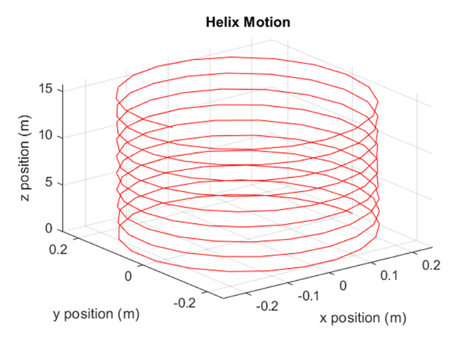

MATLAB QUADCOPTER SIMULATION
This project models the full 3D nonlinear dynamics of a quadcopter by integrating its complete 12‑state equations of motion in MATLAB. Working as part of a three‑person team, I led the MATLAB dynamics and simulation development, building the core model around realistic physical parameters—total mass, center of mass, and a full inertia tensor assembled from each component. Using MATLAB’s ODE45 solver, the system couples translational motion, rotational motion, and body‑frame orientation to capture how the quadcopter accelerates, tilts, and stabilizes in three‑dimensional space.
Thrust and moment control are modeled directly from the rotor layout. Each motor contributes to total thrust, pitch and roll moments, and yaw torque through differential rotor speeds, giving the quadcopter realistic control authority in all three axes. Drag forces act in the body frame and depend on the vehicle’s orientation, producing nonlinear behaviors like tilt‑induced drift and asymmetric acceleration. All of these effects feed into the equations of motion, creating a tightly coupled system that reflects the true physics of multirotor flight.
To validate the model, I ran several steady‑state cases: pure vertical ascent, horizontal flight driven by roll angle, and a second horizontal case driven by pitch angle. In each scenario, the quadcopter naturally settled into the expected steady‑state velocities, matching analytical predictions and confirming that the force and moment balance was implemented correctly. These cases also highlighted how differences in aerodynamic coefficients along the body axes affect maximum horizontal speed, which emerged directly from the physics rather than being imposed.
As a final test, I simulated a helical trajectory defined by parametric equations in the inertial frame, with the quadcopter’s yaw angle continuously rotating to face the direction of motion. This required solving for the equilibrium thrust and orientation angles that keep the vehicle on the helix while maintaining stable rotation. Watching the quadcopter trace the helix—complete with correct orientation behavior—was a strong confirmation that the model’s twelve coupled first‑order equations were working together the way they should.
